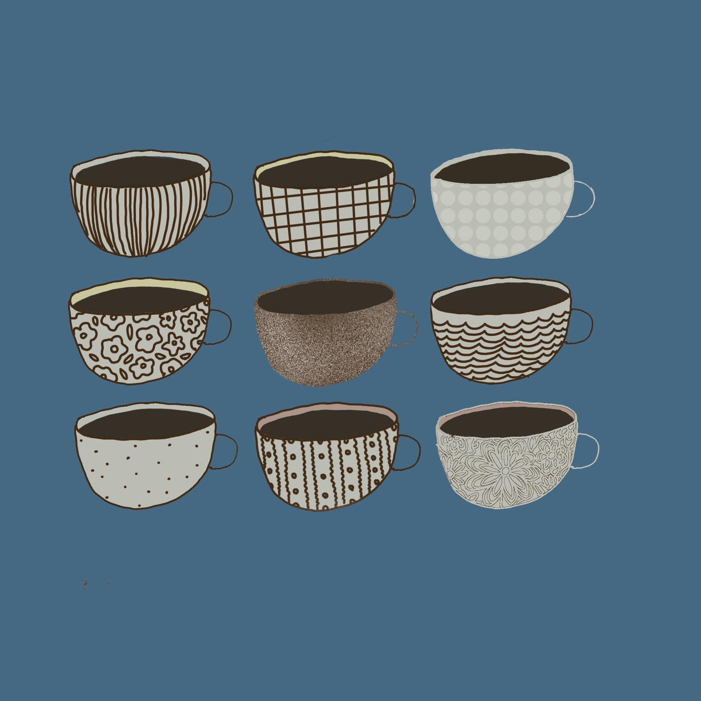
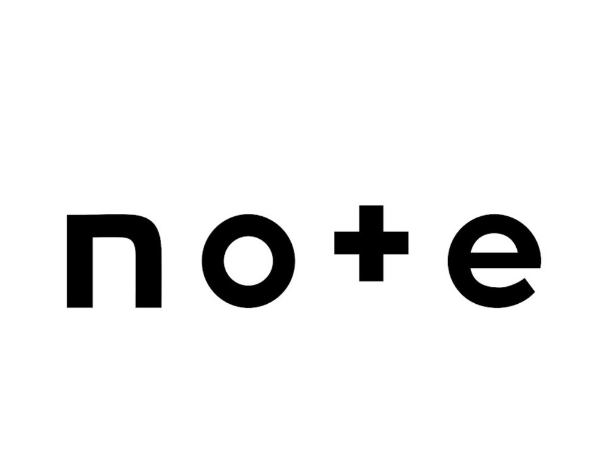
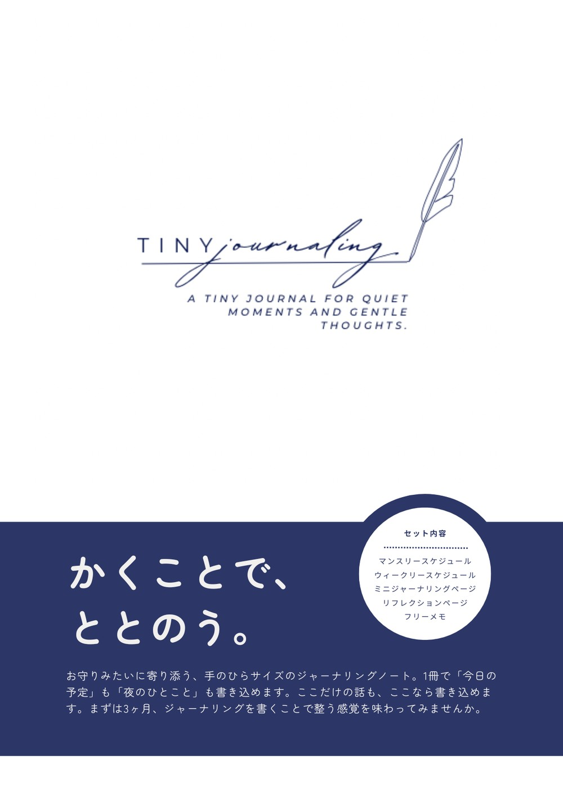
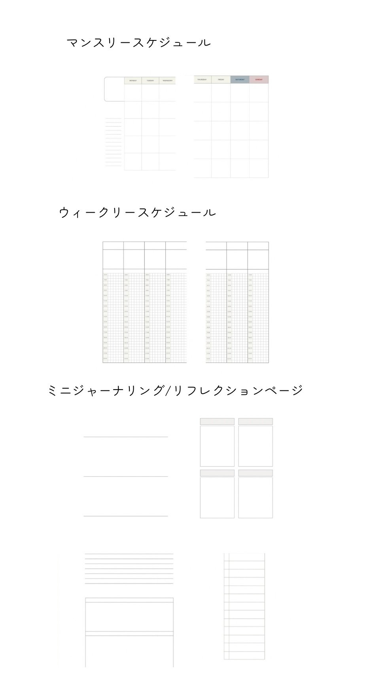

Journal
暮らしやものづくりを、言葉で綴る。

暮らしやものづくりについて、noteに綴っています。

「かくことでととのう」をテーマに、ジャーナリングキットを制作しています。 画像をタップすると詳細をご覧いただけます。

「かくことでととのう」をテーマに、ジャーナリングキットを制作しています。
お守りみたいに寄り添う、手のひらサイズのジャーナリングノート。 1冊で「今日の予定」も「夜のひとこと」も書き込めます。
セット内容：マンスリースケジュール／ウィークリースケジュール／ ミニジャーナリングページ／リフレクションページ／フリーメモ
まずは3ヶ月、書くことで整う感覚を味わってみませんか。